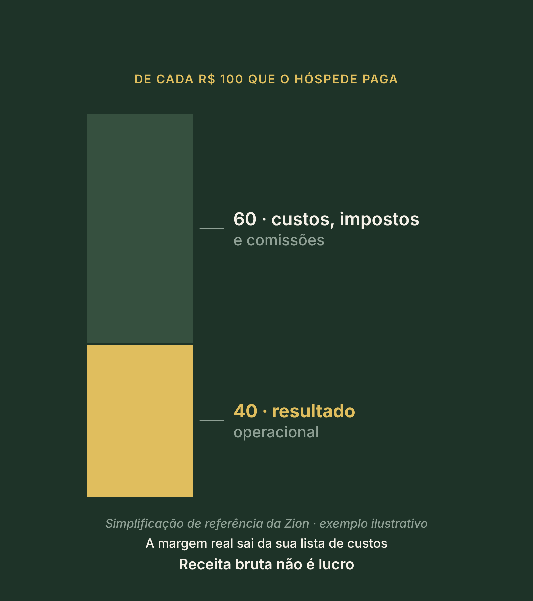
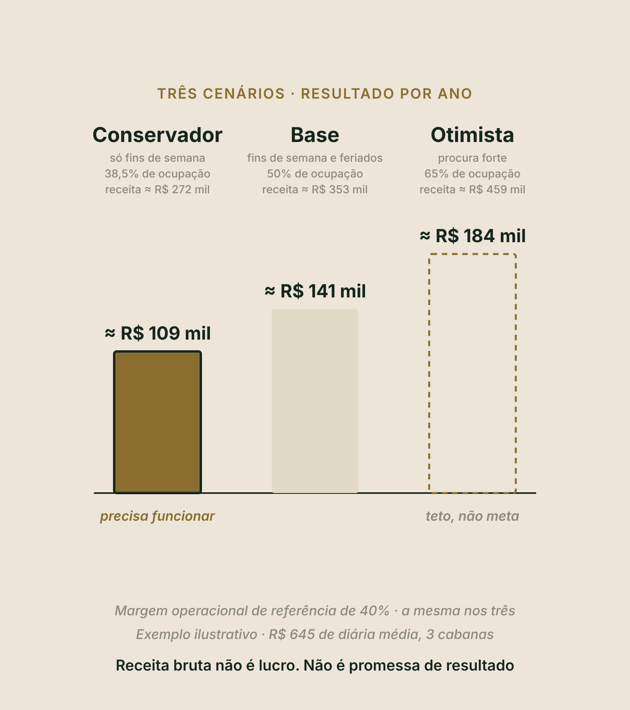
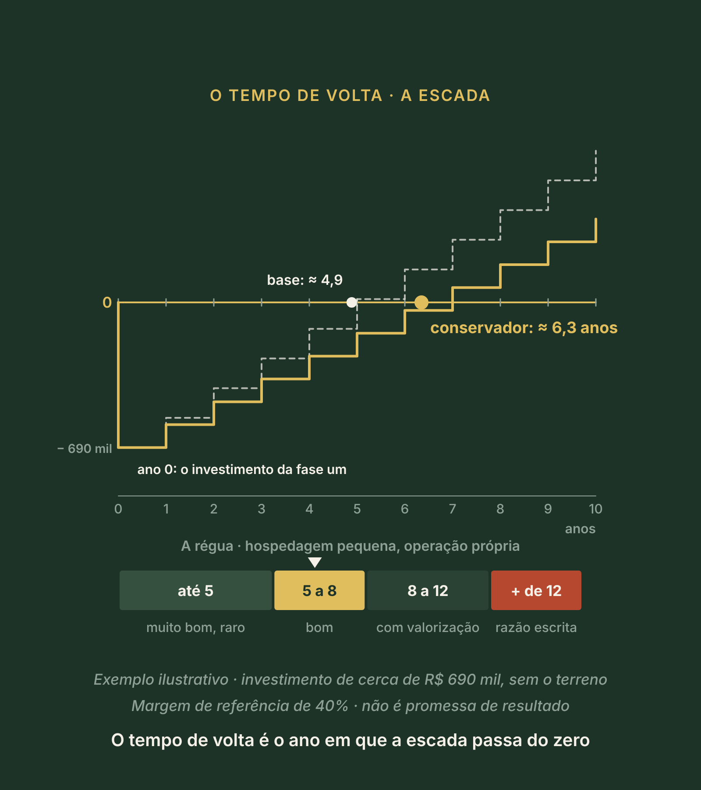

Método Zion · Etapa 4 · Fechar a conta
Pilar 6
Pré-viabilidade
A primeira conta inteira, feita antes de gastar: quanto custa abrir a porta, quanto sobra, os três cenários e o tempo de volta do dinheiro.
O que você vai fazer aqui
Assistir, responder e sair com a página 6
Assistir
Dois vídeos curtos, um por bloco. Eles aparecem aqui dentro, no ponto certo.
Responder
Uma pergunta por tela, logo depois do trecho que a explica. Cada resposta fica salva na hora, neste aparelho.
Sair com a página 6
No fim, a sua Pré-viabilidade em PDF, a página 6 do Dossiê, gerada aqui dentro, sem sair da aula.
DicaTenha à mão o seu Modelo de Negócio (Pilar 4), o seu Masterplan faseado (Pilar 5), papel e calculadora. Use os botões lá embaixo, ou as setas do teclado, para avançar.
Antes de começar · sem olhar as anotações
Três perguntas do Pilar 5
No Pilar 5, você desenhou o masterplan e congelou a fase um. É dela que sai a conta de hoje: o que não se constrói não se orça. Responda de cabeça. Errar aqui também ensina.
Agora, as duas perguntas que todo mundo quer fazer primeiro
Quanto custa, e se a conta fecha
Bloco 1 · Quanto custa o projeto inteiro
A folha de oito linhas, as duas linhas à parte e a origem de cada número.
Bloco 2 · A conta, os cenários e o tempo de volta
Quanto entra, quanto sobra, o primeiro ano, os três cenários e em quanto tempo o dinheiro volta.
Pré-viabilidade é uma primeira conta inteira, feita antes de gastar, para saber se vale a pena seguir.
Vídeo 1 de 2 · Bloco 1 · Quanto custa o projeto inteiro
Talvez você já tenha feito isto
O preço chegou pelo WhatsApp
- Você pediu o preço de uma cabana, ou de uma bolha: "tanto a unidade".
- À noite, multiplicou pelas unidades que quer. Alívio.
- Logo depois, um frio na barriga: será que é só isso?
Esse frio tem razão de existir
O preço da unidade cobre a unidade
- Foi o que você pediu. Ficam de fora o deck, a luz, a água e o esgoto, o piso, a cama, o enxoval, as licenças e a reserva para o imprevisto.
- Na referência da Zion, o que fica fora do preço da unidade é cerca de um terço do custo de uma unidade pronta.
Quiz relâmpago · clique numa resposta
O preço que chegou pelo WhatsApp, "tanto a unidade", cobre...
O preço da unidade cobre a unidade. O deck, a luz, a água e o esgoto, o piso, a cama, o enxoval, as licenças e a reserva ficam de fora.
Então troque a pergunta
Não é quanto custa a cabana. É quanto custa abrir a porta.
O investimento é tudo o que precisa existir até o primeiro hóspede, cada número com a origem escrita ao lado. O nome técnico é CAPEX: o que se gasta uma vez para construir e equipar.
Ele cabe numa folha de oito linhas
Seis de cada unidade, duas do projeto
- A unidade, a bolha ou a cabana
- O deck de madeira
- A luz
- A água e o esgoto, ou a fossa
- O mobiliário, os equipamentos e o enxoval, com três jogos de cama por cama
- O piso interno
- As licenças e os projetos
- A reserva do imprevisto, de dez por cento
As seis primeiras são de cada unidade: somadas, são a unidade pronta. As duas últimas são do projeto.
E duas linhas ficam à parte
O giro entra. O terreno fica fora, mas não é de graça.
O capital de giro
O dinheiro que paga os primeiros meses. Entra na conta, e você vê no bloco dois.
O terreno
Mesmo que já seja seu, é dinheiro preso no projeto. Fora da conta não quer dizer de graça.
Ao lado de cada linha, de onde veio o número
Só existem três respostas
Faixa de referência
Como a referência da Zion. É ponto de partida, marcado como referência.
Cotação escrita
Com escopo e data. É a que fecha o número.
Em branco
Declarado, e não escondido. Vira tarefa da semana.
Uma linha em branco vale mais do que um número inventado.
Quiz relâmpago · clique numa resposta
Você ainda não tem cotação do deck. O que vai na linha 2?
Só existem três respostas: faixa de referência, cotação escrita com escopo e data, ou em branco. Uma linha em branco vale mais do que um número inventado.
A fase um da Marina
| Linha | Cerca de |
|---|---|
| Três unidades prontas, com mobília | R$ 577 mil |
| Licenças e projetos, numa estimativa | R$ 15 mil |
| Reserva do imprevisto, de dez por cento | R$ 58 mil |
| Capital de giro | R$ 41 mil |
| A fase um da Marina | R$ 690 mil |
Três cabanas de glamping para casal. A unidade pronta, com mobília, seja bolha ou cabana: cerca de R$ 190 mil. A unidade sozinha: cerca de R$ 129 mil.
RepareÉ uma referência, não um orçamento. O seu número depende do terreno, da região e do padrão, e só fecha com cotação escrita. E o terreno é dela: fica fora da conta.
Falta a infraestrutura comum
A linha que mais varia
- O acesso, os caminhos, o estacionamento, o apoio e a rede preparada para o projeto completo. Na Marina, para cinco cabanas.
- Varia de terreno para terreno, e se orça pela distância e pela capacidade.
- A primeira ligação é para a concessionária de energia: é gratuita.

Quiz relâmpago · sobre licenças, um aviso
O que vale de licença no seu terreno, quem confirma?
O que vale no seu terreno, quem confirma é a prefeitura, o arquiteto e, se houver dúvida, o advogado.
E se a conta passar do que você pode?
Corte metros no projeto, antes da obra. Nunca corte a experiência dentro deles.
Na Marina, a banheira no deck e a lareira são o que movem a diária. Ficam.
Antes do bloco dois · a sua lição
A sua folha até aqui
A lição do vídeo: a folha de oito linhas, com a origem ao lado de cada número, as duas linhas à parte e a primeira ligação, para a concessionária. Onde aparece "não sei", é tarefa da semana.
Vídeo 2 de 2 · Bloco 2 · A conta, os três cenários e o tempo de volta
Receita bruta não é lucro
Dessa receita ainda saem três coisas. Antes delas, os seus dois números.
Dessa receita saem três coisas
Do que entra ao que sobra
Impostos e comissões
Com a alíquota que o contador confirma.
Custos variáveis
Como a limpeza, a lavanderia e a cesta do café.
Custos fixos
Saem com a casa cheia ou vazia: a pessoa local, a manutenção e o seu próprio trabalho.
Para uma primeira conta · simplificação de referência da Zion
De cada R$ 100 que o hóspede paga
- R$ 60 pagam custos, impostos e comissões. R$ 40 ficam como resultado da operação: uma margem operacional de 40%.
- Na Marina, 40% de cerca de R$ 272 mil dá cerca de R$ 109 mil por ano, antes de qualquer parcela de financiamento.
- É simplificação, não promessa. A sua margem real sai da sua lista de custos.
GuardeOcupação é vaidade, margem é sobrevivência.

Mexa você · a receita e a margem
Começa no exemplo da MarinaFaturou bem. Quanto sobrou?
Antes de qualquer parcela de financiamento.
Quiz relâmpago · clique numa resposta
A Marina fatura cerca de R$ 272 mil no ano. Na margem de referência, quanto fica como resultado da operação?
Receita bruta não é lucro. De cada R$ 100, R$ 40 ficam: 40% de cerca de R$ 272 mil é cerca de R$ 109 mil por ano.
E tem o primeiro ano
Nenhuma hospedagem nova abre com a ocupação do destino
- A procura sobe aos poucos, e parte do custo não cai junto.
- A Marina abre no começo da alta: a decisão de maior efeito, e que não custa nada.
Para isso existe o capital de giro
O dinheiro dos meses em que a receita ainda não cobre o custo
Projeto quebra por falta de caixa num mês.
Os três cenários do Pilar 4 · mesma diária, mesma margem
| Cenário | Ocupação | Resultado no ano |
|---|---|---|
| Conservador · só fins de semana, o que ela mediu | 38,5% | cerca de R$ 109 mil |
| Base · com os feriados | 50% | cerca de R$ 141 mil |
| Otimista · procura forte | 65% | cerca de R$ 184 mil |
O otimista é teto, não meta. O que precisa funcionar é o conservador.

Quiz relâmpago · clique numa resposta
Dos três cenários, qual precisa funcionar?
O que precisa funcionar é o conservador, o que você mediu. O otimista é teto, não meta.
O tempo de volta, em linguagem de padaria
Você põe um milhão numa padaria
Pense numa escada
O ano em que a escada passa do zero
- No ano zero, sai o investimento. Depois, cada ano devolve o resultado.
- Na Marina, cerca de R$ 690 mil. No conservador, a escada passa do zero em pouco mais de seis anos. No base, perto de cinco. No otimista, em menos de quatro.
- O terreno não entra no tempo de volta porque já é dela. Mas fica preso no projeto: a razão fica escrita no Dossiê.

Mexa você · a escada
Começa na padariaComo ler · hospedagem pequena, com operação própria
A régua do tempo de volta
- De 8 a 12: aceitável com valorização relevante do imóvel.
- Acima de 12: só com uma razão escrita, como patrimônio, uso da família ou projeto de vida.
Quiz relâmpago · clique numa resposta
No conservador, a escada da Marina passa do zero em pouco mais de seis anos. Pela régua, isso é...
De cinco a oito anos é bom. No cenário mais fraco, a conta da Marina fecha dentro da régua. É uma leitura de referência, não garantia.
E a Marina?
No cenário mais fraco, dentro da régua
- Ela pode avançar com a fase um. Mas é uma conta de referência.
- Antes de assinar, troca cada linha por cotação escrita e soma a infraestrutura do terreno.
- O critério: se o investimento passar de cerca de R$ 870 mil, ou a receita cair uns 20%, o tempo de volta passa de oito anos, e ela volta à conta.
Quando a conta fechar com números reais
Três caminhos para crescer
Melhorar o que existe
Mais resultado com o que já está de pé.
Construir mais
No terreno que você já desenhou, quando o gatilho acender.
Um projeto novo
O caminho inteiro de novo, em outro lugar.
Primeiro prove a conta, depois escolha como crescer. Na Marina, a quarta e a quinta cabanas esperam o gatilho da fase dois, como no Pilar 5.
O Pilar 6 em cinco frases
O que ficou
- Não é quanto custa a cabana: é quanto custa abrir a porta, numa folha de oito linhas, cada uma com a origem ao lado.
- O giro entra na conta. O terreno fica fora, mas não é de graça.
- Receita bruta não é lucro: a margem de 40% é simplificação, não promessa.
- O que precisa funcionar é o conservador. O otimista é teto, não meta.
- O tempo de volta é o ano em que a escada passa do zero: uma leitura, não garantia. Primeiro prove a conta, depois escolha como crescer.
Para a página sair com o seu nome
Quem é você e onde fica o terreno
Fica salvo neste aparelho. Se você já preencheu em outro pilar, trouxemos de lá. Nada é enviado nesta aula: a ferramenta usa o seu e-mail só quando você pedir o mentor virtual ou baixar o PDF.
As suas respostas já estão aqui. Confira, gere o resultado e baixe a página 6 do seu Dossiê. No fim, envie para o Land Bank da Zion.
Próximo · Pilar 7
Capital e Dossiê
De onde vem o capital, com quem, e a decisão de avançar, ajustar ou parar. Só siga com a Pré-viabilidade na mão.
Um projeto assim é o que um sócio, um banco ou a Zion conseguem avaliar. E a Zion avalia cada caso.
LembreSalve o PDF na pasta Meu Dossiê.
Conteúdo educacional. A Marina é um exemplo ilustrativo e as contas são ilustrativas, na referência da Zion. Não é orçamento nem oferta de investimento, e não é promessa de renda, lucro, retorno, prazo de retorno, ocupação, crédito ou sociedade: o tempo de volta é uma leitura, não garantia. Impostos, quem confirma é o contador; licenças, a prefeitura e o arquiteto; contratos, o advogado. A Zion avalia cada caso.